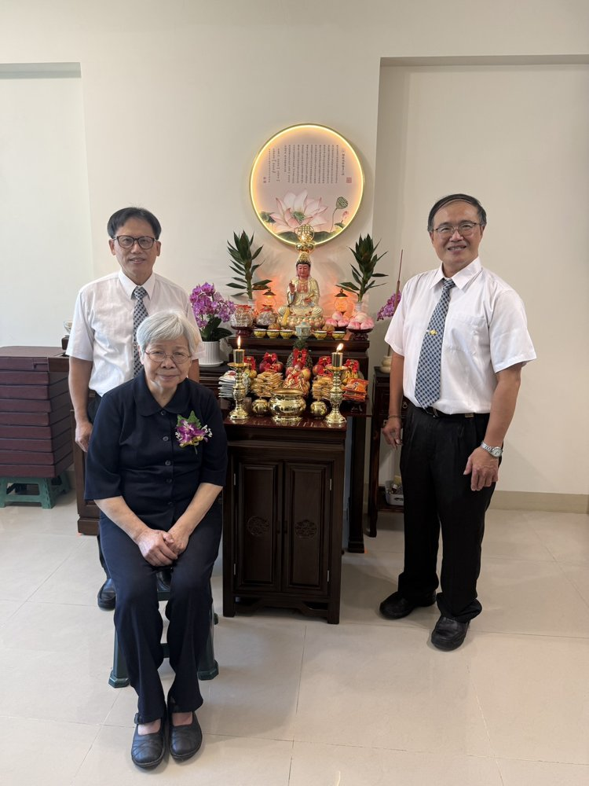
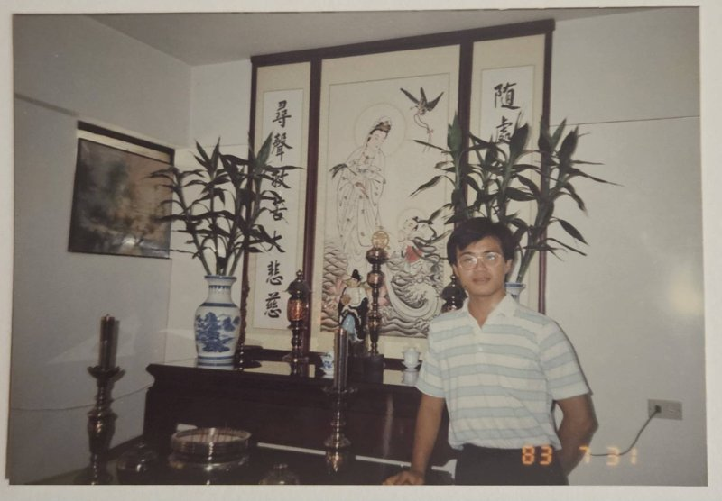
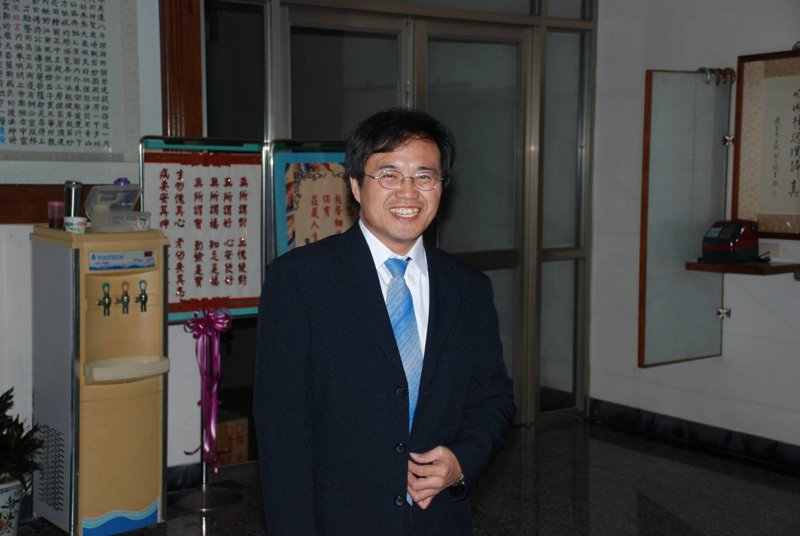
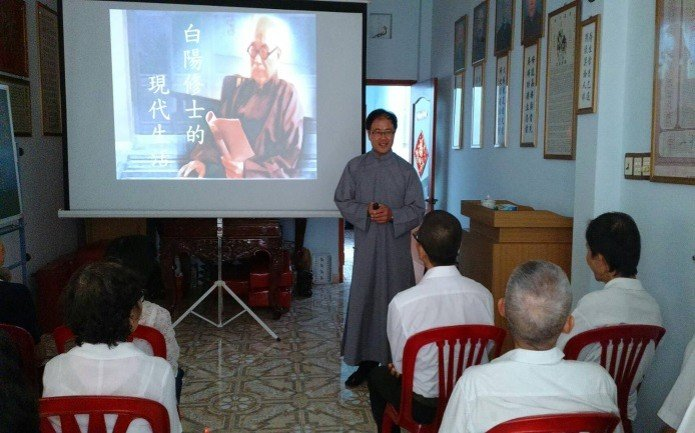

序-後學承蒙天恩師德加被，深感三生有幸,能欣逢三期大開普渡得遇明師，求得真道!
後學15歲求道至今40餘年。從修辦的體驗,見證無數次天道的寶貴與殊勝，仙佛無處不慈悲也與我們每個人累世所種因緣.根基.不無關係,古云:皆因累世種菩提!
修辦因緣-年少時,經由同學引渡於南部興毅道場。求道當晚即夢見已亡故母親前來感謝，母親帶笑的慈容,另後學難忘,後經壇主講解,更堅定求道的殊勝意義，從此發心渡人辦道,在道場參辦學習!
但是就在一年後,為了趕赴畢業考的一場車禍中，改變了之後的人生道路。當時在搶救醫療過程中,深深感受到仙佛慈悲顯化撥轉,讓後學在一次次的手術中化險為夷，終能重生,並且在老師的撥轉穿針引線因緣來到了新竹再次踏入佛堂修辦。多年後成家,經壇主點傳慈悲鼓勵成立了家庭佛堂。天恩浩大,106年道場推動固本圖強的因緣中,由家庭佛堂轉公共佛堂,賜名『毓德佛堂』,讓更多的同修能替師分憂,共駕法船！
學修講辦心得分享-後學一生乖桀,母親早逝,父親獨力撫育五子,若非求得大道,仙佛慈悲暗中撥轉與鼓勵，恐已與木同朽，更是深體道之寶貴，總在每每修辦學習時警惕自己把自己的習氣毛病，慢慢進步自己(學中做,辦中修)，不論在順境逆境考驗中，總要依法不依人,守住道念,盡己之力,時時感謝上天給後學機會，慢慢進步自己!
這樣才有機會對已故往的父母盡一份孝道!也不辜負自己能有求修辦,改變自己命運的夙世根基緣分，玄祖沾恩,了我累世因緣!
也讓我在修辦中有機會扭轉考驗我的家人認同我，願意進入道場修辦行列!
也讓我的人生因為修辦有了目的、價值與意義而變得不一樣!貧苦的出生,色身的病痛折磨,卻能進入神聖的殿堂修辦!夫妻同修共辦到設立佛堂，上天慈悲恩賜一位天使，從出生到大，我們無須擔憂，小時就立志吃素，加入伙食團，我們變成了一個神仙家庭，無意間更是讓家人兄弟刮目相看，而這一切都是上天的慈悲，道真理真天命真！
發心了愿－儘管一路走來雖有時跌跌撞撞，總會想起求道時前賢鼓勵的話，你的母親能託夢給你代表你因緣殊勝，現在要好好行功了愿，報答父母恩，因為你的父母在等著你的功德，多年後蒙點傳師恩准超拔了母親！上天再一次演化”人有善愿,天必從之”
就如，在一次參加法中恩師叫起後學，我雖一生苦難，但要忍耐，學著莊敬自強，徒的話為師都聽到了，為師都在你的身邊．讓後學再次感動痛哭！
我們今生能走在修辦的路上,絕對是不容易,不簡單,不平凡,前賢常說得道四難,就因為難才可貴,我們也謹記老師訓文(修辦道程圖)中所說,求道為起點,修心.立志.了愿.使修道不流於一時熱誠,而是一條有次第有方向的康莊大道,在每一步都要”認理實修”在渡人中渡己,了愿還鄉,才能不枉此生!